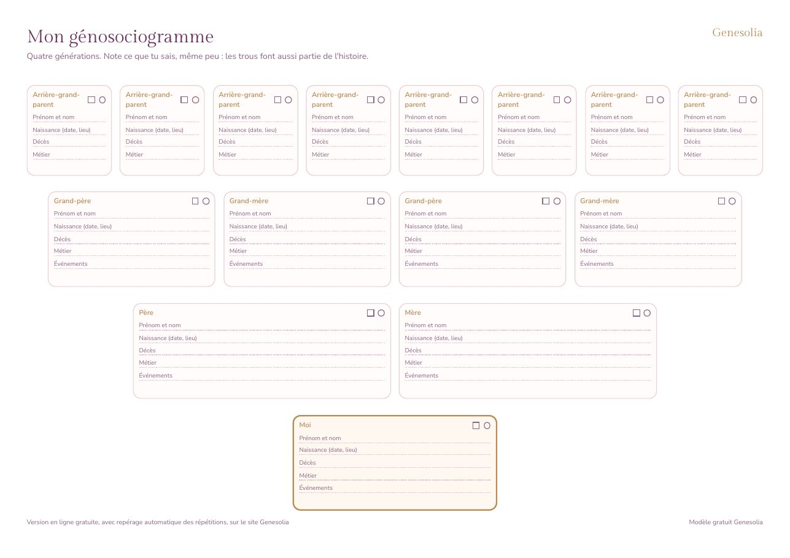

Le modèle à imprimer
- Idéal pour une première ébauche ou un repas de famille
- Quatre générations, une case par personne
- Les répétitions, c'est toi qui les repères
Un génosociogramme vierge, prêt à imprimer, pour remplir ton arbre familial à la main sur quatre générations. Gratuit, en PDF, sans inscription.

Format A4 paysage, deux pages, 65 Ko.
Le papier aide à commencer, crayon en main, en interrogeant ta famille. La version en ligne va plus loin quand l'arbre grandit.